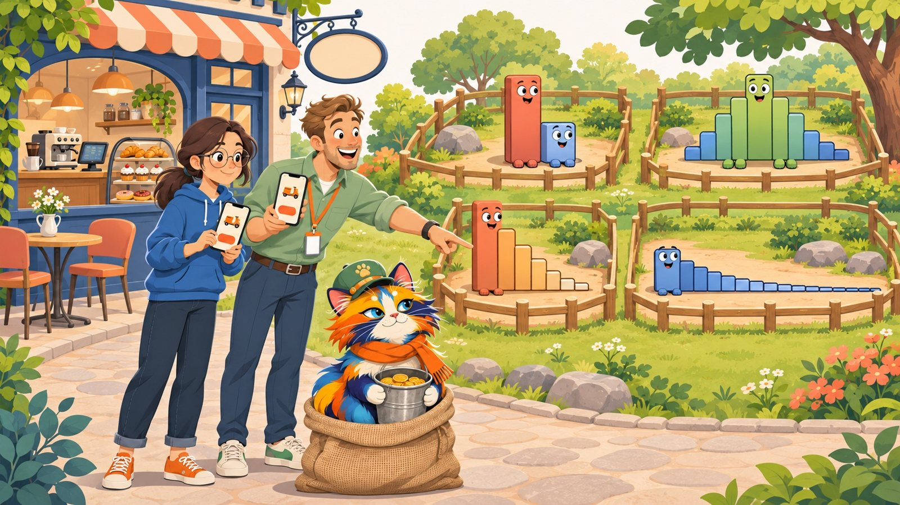
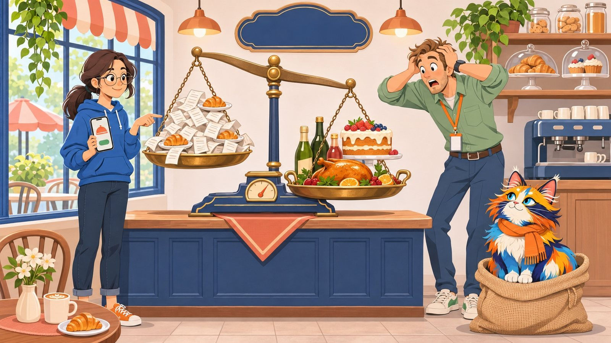
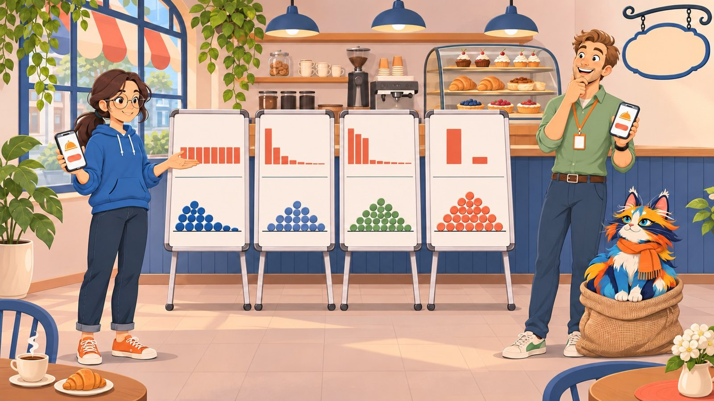

«Сколько», «сколько до», «сколько ждать», «сколько денег» — разные вопросы. Сначала опиши процесс, который рождает число, потом выбирай распределение.
Сначала вспомним
В кафе 400 гостей в день, конверсия 10%. Каков SD дневной доли заказавших?
SD доли = √(p(1 − p)/n) = √(0.1 · 0.9/400) = 0.015, то есть 1.5 п. п. Это было в главе 4.
Каждый гость берёт десерт с шансом 20%. На каком по счёту госте чаще всего случается первый десерт за день?
P(«первый десерт на k-м госте») = 0.8ᵏ⁻¹ · 0.2: на первом — 20%, на втором — 16%, на третьем — 12.8%… Самый частый — первый, хотя в среднем ждать 5 гостей. Это геометрическое распределение из шага 7 «Вероятности на пальцах».
Часть I · глава 6
Зоопарк распределений
После главы ты сможешь подобрать распределение под процесс и объяснить, почему средний чек не похож на типичный.

Боб докладывает: «Средний чек — 640 ₽». Алиса: «А типичный гость тратит 350». Кто из них врёт?
В прошлой главе был колокол. Но заказы в час, время до следующего гостя и сумма в чеке устроены иначе, и у каждого процесса своё распределение. Глава снова про второй шаг алгоритма: как распределено.
- 1. Что здесь случайно?
- 2. Как распределено?
- 3. Центр и разброс
- 4. Насколько шумит среднее
- 5. Сколько стандартных ошибок до порога
- 6. Ответ бизнесу
Средний чек и типичный гость

Боб, продакт
Средний чек 640 ₽. Значит, обычный гость тратит около 640, кто‑то чуть больше, кто‑то чуть меньше.

Алиса, аналитик
Медиана — 350 ₽: половина гостей тратит меньше. Средний чек тянут вверх банкеты и корпоративные заказы.

Котейка
Мяу. А сколько гостей тратит больше среднего чека?
Если бы чеки были колоколом, больше среднего тратила бы ровно половина гостей. А здесь?
Напиши число — в зоопарке на следующей карточке проверим на «сколько денег».
Процесс → распределение
Выбери вопрос, который задаёт кафе. Генератор выдаст смену: 500 гостей, компаний, отрезков времени или чеков. Столбики — что вышло, серые точки или линия — теория. Красная черта — среднее, фиолетовая — медиана, жёлтая — мода, самое частое значение.
Выбранное распределение; точки — теория
среднеемедианамодатеория
Биномиальное и геометрическое с нуля, без процессов кафе, — в «Вероятности на пальцах», шаг 7 «Случайная величина и распределение».
У каждого вопроса — своё распределение
История
В штуках
Если в среднем приходит 5 заказов за 10 минут, то из 1000 таких отрезков примерно в 7 не будет ни одного заказа, а ровно 5 заказов — примерно в 175.
Формула
Poisson(λ): P(k) = e−λ · λk / k!, E = Var = λ
Словами: λ — сколько событий в среднем за отрезок; разброс у Пуассона равен среднему.
| Вопрос кафе | Распределение | Среднее | Дисперсия |
|---|---|---|---|
| Заказал или нет? | Bernoulli(p) | p | p(1 − p) |
| Сколько из n? | Binomial(n, p) | np | np(1 − p) |
| Сколько за отрезок? | Poisson(λ) | λ | λ |
| Сколько гостей до первого? | Geometric(p): P(k) = (1 − p)k−1p | 1 / p | (1 − p) / p² |
| Сколько ждать? | Exponential(λ): плотность λe−λt | 1 / λ | 1 / λ² |
| Сколько денег? | Lognormal: ln X ~ N(μ, σ²) | eμ + σ²/2 | медиана eμ |
Родство: биномиальное — это n монеток Бернулли; при большом n и маленьком p оно становится Пуассоном; время между событиями пуассоновского потока — экспонента, её дискретный двойник — геометрическое. Логнормальное получается, когда величина растёт процентами: чек, выручка, время сессии.
Откуда берётся Пуассон
В районе живут тысячи людей, и каждый в этот час закажет с крошечным шансом. Это как дождь на листе в клеточку: режем 10 минут на n клеток, в каждую заказ попадает с шансом 5/n. Число заказов — биномиальное. Дроби клетки мельче.
Биномиальное распределение — столбики, Пуассон — точки
Binomial(n, 5/n)Poisson(5)
Пуассону всё равно, сколько клеток: важна только сила дождя λ = np. Поэтому он подходит для заказов в час, жалоб за день и падений сервера за месяц — если события приходят по одному и независимо.
Идея из лекций: Joe Blitzstein, Stat 110 — дождь на листе в клеточку
Курьер опаздывает. Сколько ещё ждать?
К кафе приезжают курьеры, в среднем раз в 10 минут. Первый сервис ходит строго по графику: ровно каждые 10 минут. У второго интервалы случайные — экспонента со средним 10. С прошлого курьера прошло несколько минут. Сколько ещё ждать?
Сколько осталось ждать
строгий графикслучайные интервалы (симуляция)
—осталось ждать по графику
—в среднем осталось у экспоненты
А если прийти на остановку в случайный момент — ждать в среднем 5 минут? Только при строгом графике. Почему при случайных интервалах ждут дольше — в главе 8.
Один банкет и сто завтраков

Утром кафе продало 100 завтраков — точки на оси. Добавь банкет и смотри, куда поедут среднее и медиана.
Сто чеков завтраков: среднее и медиана
—средний чек
—медиана
среднеемедиана
Без банкета средний чек утра — 394 ₽, медиана — 360 ₽. Банкет на 40 000 ₽ поднимает среднее почти вдвое, до 786 ₽, а медиана сдвигается меньше чем на два рубля. Средний чек 786 ₽ не похож ни на завтрак, ни на банкет, но выручку утра даёт именно он: 101 × 786 ₽.
Идея из книги: Allen Downey, «Probably Overthinking It» — рождаемся гауссовыми, вырастаем логнормальными
Среднее, медиана и киты
Напиши две функции. summary(xs) возвращает пару (среднее, медиана). share_above_mean(sigma) генерирует 200 000 логнормальных чеков с медианой 350 ₽ и σ логарифма sigma и возвращает долю чеков дороже их среднего.
Боб и пятничный Пуассон
Боб, продакт
По пятницам вечером в среднем 5 гостей за 10 минут. Пуассон обещает SD = √5 ≈ 2.2. А у меня SD почти 4! Пуассон сломался.
Что, скорее всего, не так?
Пуассон описывает события, которые приходят по одному и независимо. Если гости приходят компаниями по 1–4 человека, а компании — по Пуассону, то при тех же 5 гостях в среднем SD будет около 3.9. Разброс больше среднего называют избыточной дисперсией (overdispersion): это знак, что события слипаются.
Три задачи про распределения
Схема ответа одна: переформулируй → посчитай в штуках → запиши формулу → проверь симуляцией → скажи вывод одной фразой.
Пекарь кладёт в тесто столько изюма, что в среднем на булочку приходится 5 изюмин. Каков шанс, что в булочке ровно 5? Ни одной?
Переформулирую: изюмин много, каждая попадает в эту булочку с маленьким шансом — это Пуассон с λ = 5.
В штуках: из 1000 булочек ровно с 5 изюминами — около 175, без изюма — около 7.
Формула: P(5) = e−5 · 5⁵ / 5! ≈ 0.175, P(0) = e−5 ≈ 0.0067.
Симуляция: x = np.random.poisson(5, 10**6); np.mean(x == 5), np.mean(x == 0).
Вывод: ровно среднее число изюмин бывает лишь в каждой шестой булочке, а пустая — примерно одна из 150.
Последние семь доставок шли 18, 19, 21, 22, 25, 27 и 140 минут. Что писать гостю в приложении: «в среднем 39 минут»?
Переформулирую: распределение времени скошено вправо: одна доставка застряла. Что из среднего, медианы и моды описывает типичный заказ?
В штуках: 6 доставок из 7 уложились в 27 минут. Среднее 272/7 ≈ 38.9 минуты, и под ним — 6 доставок из 7. Медиана — 22.
Формула: у правого хвоста обычно мода < медиана < среднее; среднее чувствительно к одному значению, медиана — нет.
Симуляция: функция summary с карточки «Код» — и посмотри, как среднее скачет, если 140 заменить на 40.
Вывод: гостю честнее «обычно 20–25 минут, бывает дольше», а для планирования курьеров нужен ещё и хвост: например, 90-й процентиль.
Средняя глубина реки — 1 метр. Можно ли в ней утонуть?
Переформулирую: что среднее говорит о максимуме и о хвосте распределения?
В штуках: река шириной 100 м: 90 м по колено, на 0.5 м, и 10 м омута по 5.5 м — в среднем ровно 1 м.
Формула: 0.9 · 0.5 + 0.1 · 5.5 = 1. Среднее не ограничивает ни максимум, ни долю опасных мест.
Симуляция: любой массив глубин с np.mean(d) == 1 и np.max(d) > 2.
Вывод: можно; для риска нужен хвост распределения — максимум или верхний квантиль, а не среднее.
Вопросы про зоопарк
Средний чек — 640 ₽, медиана — 350 ₽. Сколько обычно тратит гость?
Медиана делит гостей пополам, поэтому «обычный гость» — около 350 ₽. Среднее 640 ₽ нужно для выручки: выручка = число гостей × средний чек. Оба числа верны, они отвечают на разные вопросы.
Курьеры приезжают в случайные моменты, интервалы — экспонента со средним 10 минут. С прошлого курьера прошло 8 минут. Сколько ещё ждать в среднем?
У экспоненты нет памяти: P(T > 8 + t | T > 8) = P(T > t). Прошедшие 8 минут ничего не приближают — ждать в среднем ещё 10.
Алиса взяла среднее логарифмов чеков и вернула экспонентой: eсреднее ln = 350 ₽. Что это за число?
Если ln X ~ N(μ, σ²), то среднее логарифмов — μ, а eμ — медиана X. Средний чек больше: eμ + σ²/2. При σ = 1.1 это 350 · e0.605 ≈ 641 ₽. Сравнивать группы по логарифмам — значит сравнивать медианы, а не выручку.
Гость делает в неделю в среднем 0.5 заказа, по Пуассону. Сколько в среднем заказов у тех, кто заказал хотя бы раз?
Доля заказавших 1 − e−0.5 ≈ 0.39. Среднее на заказавшего = 0.5/0.39 ≈ 1.27. «На гостя» и «на заказавшего» — разные метрики, и при сравнении групп важно не перепутать знаменатель.
Сначала процесс, потом распределение
- Заказал или нет — Bernoulli(p): E = p, Var = p(1 − p). Сколько из n — Binomial(n, p): np, np(1 − p).
- Сколько за отрезок — Poisson(λ): P(k) = e−λλk/k!, E = Var = λ. Работает, если события приходят по одному и независимо.
- Сколько гостей до первого — Geometric(p): E = 1/p, чаще всего — первый. Сколько ждать — Exponential(λ): E = 1/λ, памяти нет.
- Сколько денег — часто логнормальное: ln X ~ N(μ, σ²), медиана eμ, среднее eμ + σ²/2.
- У правого хвоста мода < медиана < среднее. Больше среднего тратит меньше половины гостей.
- Среднее — для выручки, медиана — для «типичного гостя», хвост — для риска.
- Распределение Пуассона
- число редких независимых событий за отрезок; Poisson distribution
- Экспоненциальное распределение
- время до следующего события пуассоновского потока; exponential distribution
- Логнормальное распределение
- логарифм величины нормален; lognormal distribution
- Медиана и мода
- середина отсортированных значений и самое частое значение; median, mode
- Отсутствие памяти
- P(T > s + t | T > s) = P(T > t); memorylessness
- Тяжёлый хвост
- редкие огромные значения, которые сдвигают среднее; heavy tail, «киты» — whales
- Избыточная дисперсия
- разброс счёта больше, чем обещает Пуассон; overdispersion
